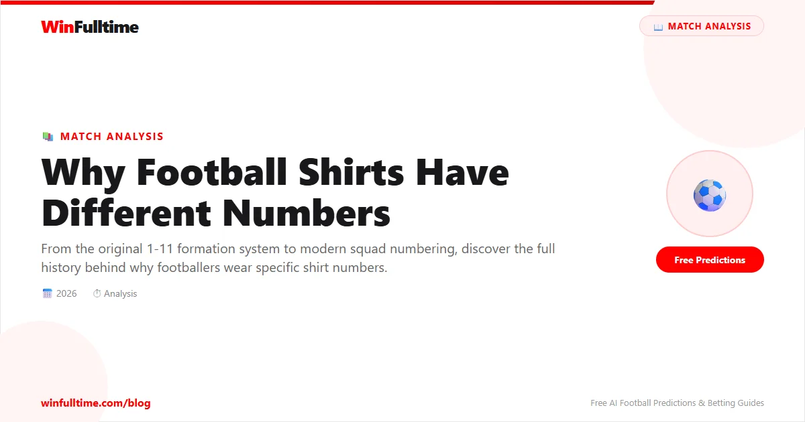

When you see Lionel Messi wearing number 10, or Erling Haaland wearing number 9, it does not feel random. It feels right. The number seems to belong to the player, as if it were designed for them. But the system of numbered shirts in football has a history that most fans never learn, and the rules have changed dramatically over the past century.
The short answer to why football shirts have different numbers is that it began as a practical way to identify players for referees and spectators. The longer answer involves a formation-based numbering system that lasted 70 years, a revolution in the 1990s, and a modern era where numbers carry cultural weight that the original designers never imagined.
Football shirts were not always numbered. Before 1928, players on a team wore identical shirts with no distinguishing marks. Referees identified players by their position on the pitch, and spectators relied on recognizing players by their physique, playing style, or nickname. This created obvious problems. In a crowd of 22 players, distinguishing the right back from the left back was difficult for everyone except the most dedicated fans.
The first recorded use of numbered shirts in a professional match was on August 25, 1928, when Chelsea played Arsenal at Stamford Bridge. The Football League approved the experiment, and each player wore a number corresponding to their position on the pitch. Number 1 was the goalkeeper. Numbers 2, 3, 4, and 5 were the defenders. Numbers 6, 7, 8, and 9 were the midfielders and striker. Numbers 10, 11, and 12 completed the forward line.
The system was simple, logical, and immediately popular. Within two years, numbered shirts were mandatory in English football. The Football Association adopted the system formally in 1939, and it spread across Europe and South America throughout the 1930s and 1940s.
1 — Goalkeeper
2 — Right Back
3 — Left Back
4 — Centre Back / Right Half
5 — Centre Back / Centre Half
6 — Left Half
7 — Right Winger
8 — Centre Forward
9 — Striker
10 — Inside Forward / Playmaker
11 — Left Winger
The numbering system was not arbitrary. It was directly tied to the tactical formations used at the time. In the 1930s, the dominant formation was the W-M formation (known as 3-2-2-3 in modern terminology), which placed players in specific numbered positions. The numbering reflected the order in which players appeared on the team sheet, starting from the goalkeeper and moving outward.
This system remained virtually unchanged for 60 years. The 2-3-5 formation of the early 1900s evolved into the W-M in the 1930s, then into the 4-2-4 in the 1950s, and eventually into the 4-4-2 that dominated English football from the 1960s through the 1990s. Throughout all these tactical changes, the numbering system remained the same. Number 9 was always the centre forward. Number 10 was always the creative midfielder. Number 7 was always the right winger.
This created a deep cultural association between numbers and roles. A "number 9" was not just a shirt number. It was a description of a player's function. A "number 10" was not a digit. It was a statement of creative authority. The numbers became part of football's language.
The system changed dramatically in the 1990s. The catalyst was the 1994 World Cup in the United States, where FIFA required all participating nations to assign fixed squad numbers to their players for the entire tournament. Before this, most international teams numbered their squads 1-11 for each match, reassigning numbers based on the starting lineup.
The Premier League followed suit in 1993-94, introducing permanent squad numbers for the first time. Each player was assigned a number at the start of the season, and that number stayed with them regardless of their position or role. Eric Cantona became famous wearing number 7 at Manchester United. Dennis Bergkamp claimed number 10 at Arsenal. Alan Shearer wore number 9 for Newcastle.
The change was controversial at first. Traditionalists argued that permanent numbers destroyed the connection between number and position. A player wearing number 5 might now be a right midfielder rather than a centre back. A number 10 might be a winger rather than a playmaker. But the new system had undeniable commercial benefits. Shirt sales skyrocketed because fans could buy a shirt with their favourite player's number permanently attached to them.
| Number | Traditional Role | Modern Meaning |
|---|---|---|
| 1 | Goalkeeper | Still almost always the goalkeeper |
| 2 | Right Back | Often a full-back, but not always |
| 5 | Centre Back | Defensive midfielder or centre back |
| 7 | Right Winger | Attacking midfielder or winger |
| 9 | Centre Forward | Striker, but sometimes a winger |
| 10 | Inside Forward | Creative playmaker |
| 11 | Left Winger | Attacking player, often a winger |
Some numbers have acquired a significance that goes far beyond their original tactical meaning. The number 10 shirt, in particular, has become the most prestigious number in football. It was worn by Pelé, Diego Maradona, Michel Platini, Zinedine Zidane, Lionel Messi, and Neymar. In most top clubs, the number 10 is given to the team's most creative and influential player. When a new signing receives the number 10, it is treated as a statement of intent.
The number 7 carries similar weight. It was made iconic by George Best, Eric Cantona, David Beckham, and Cristiano Ronaldo. At Real Madrid, the number 7 shirt is considered one of the most important in the squad. When Ronaldo left for Juventus in 2018, the number 7 shirt became a subject of intense speculation about who would inherit it.
Number 9 remains the traditional striker's number. It was worn by Gerd Müller, Marco van Basten, Ronaldo Nazário, and Robert Lewandowski. The number carries an expectation of goals. A player who wears number 9 is expected to score. The pressure associated with the number is real, and some strikers have actively avoided it for this reason.
Number 10 — The creative heartbeat. Messi, Maradona, Pelé, Zidane.
Number 7 — The iconic attacker. Cristiano Ronaldo, Best, Beckham, Cantona.
Number 9 — The goalscorer. Lewandowski, Gerd Müller, Ronaldo Nazário.
Number 3 — The left back. Roberto Carlos, Ashley Cole, Paolo Maldini.
Number 1 — The goalkeeper. Gianluigi Buffon, Manuel Neuer, Iker Casillas.
FIFA currently allows numbers 1-99 in most competitions. Goalkeepers must wear numbers 1, 12, 13, or 25. In the Premier League, squads are numbered 1-99, with no positional restrictions. In La Liga and Serie A, the rules are similar. The only hard restriction is that the two goalkeepers in a matchday squad must wear different numbers, and at least one must wear a number between 1-15.
The Champions League follows FIFA's squad numbering rules, which require all players to be registered with numbers between 1-99. Clubs typically reserve certain numbers for specific roles: 1 for the first-choice goalkeeper, 9 for the main striker, 10 for the playmaker, and 7 for the star attacker. But these are conventions, not rules.
The most dramatic examples of number choice in modern football involve players who deliberately select numbers that break convention. Neymar wears number 10 at PSG and Brazil, maintaining the tradition. But at Barcelona, he wore number 11 because Messi already held number 10. Similarly, Mbappé wears number 7 at Real Madrid, not because he is a traditional right winger, but because the number carries the prestige he wants.
The numbered shirt system has survived for nearly a century because it serves multiple purposes simultaneously. For referees, it provides clear identification. For spectators, it makes following the game easier. For broadcasters, it simplifies commentary and graphics. For fans, it creates a personal connection with their favourite players through shirt purchases. And for the players themselves, it provides an identity on the pitch.
The system is not perfect. The disconnect between traditional number-role associations and modern tactical reality can confuse casual fans. A number 5 who plays right wing is counterintuitive. But the flexibility of the system is also its strength. It allows clubs and players to create their own meanings, independent of tactical tradition.
When you see a footballer wearing a specific number, you are seeing more than a digit. You are seeing a piece of football history, a cultural statement, and a personal identity that the player carries with them every time they step onto the pitch.
Check our free daily football predictions to find value in every match.
Generate optimized accumulator combinations from today's data-driven predictions. Set your target odds and get instant ticket suggestions.
Pro Ticket Builder →